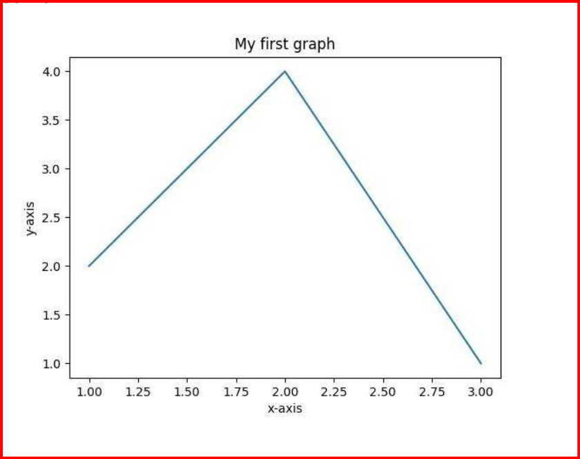

Lab Experiments
1st Exp
top
import pandas as pd
import matplotlib.pyplot as plt
#Sample data (you can replace this with your own dataset)
data = {
'Name': ['John', 'Jane', 'Mike', 'Emily', 'Alex'],
'Age': [25, 30, 22, 28, 35],
'Score': [90, 85, 78, 95, 88]
}
# Create a DataFrame from the data
df = pd.DataFrame(data)
# Display the DataFrame
print("DataFrame:")
print(df)
# Data Analysis
print("\nData Analysis:")
print("Mean Age:", df['Age'].mean())
print("Maximum Score:", df['Score'].max())
print("Minimum Score:", df['Score'].min())
# Data Visualization
plt.figure(figsize=(8, 4))
plt.bar(df['Name'], df['Score'])
plt.xlabel('Name')
plt.ylabel('Score')
plt.title('Scores of Students')
plt.show()

2nd Exp
top
import pandas as pd
data = {
'sender': ['alice@example.com', 'bob@example.com', 'alice@example.com'],
'receiver': ['bob@example.com', 'alice@example.com', 'carol@example.com'],
'subject': ['Hello', 'Meeting Reminder', 'Project Update'],
'timestamp': ['2023-08-01 10:00:00', '2023-08-02 14:30:00', '2023-08-03 09:15:00'],
'content': ['Hi Bob,\n\nHow are you?', 'Hi Alice,\n\nDon\'t forget the meeting at 3 PM.', 'Hi
Carol,\n\nHere\'s the latest project update.']
}
df = pd.DataFrame(data)
df['timestamp'] = pd.to_datetime(df['timestamp'])
df.to_csv('emails.csv', index=False)
print("CSV file created successfully.")
import pandas as pd
import matplotlib.pyplot as plt
import seaborn as sns
df = pd.read_csv("emails.csv")
print(df.info())
df['timestamp'] = pd.to_datetime(df['timestamp'])
df.dropna(inplace=True)
df['email_length'] = df['content'].apply(len)
plt.figure(figsize=(10, 6))
sns.histplot(data=df, x='email_length', bins=30, kde=True)
plt.xlabel('Email Length')
plt.ylabel('Count')
plt.title('Distribution of Email Lengths')
plt.show()
top_senders = df['sender'].value_counts()[:10]
top_receivers = df['receiver'].value_counts()[:10]
plt.figure(figsize=(12, 6))
sns.barplot(x=top_senders.index, y=top_senders.values)
plt.xticks(rotation=45)
plt.xlabel('Sender')
plt.ylabel('Number of Emails')
plt.title('Top 10 Email Senders')
plt.tight_layout()
plt.show()
df['year_month'] = df['timestamp'].dt.to_period('M')
email_activity = df.groupby('year_month').size()
plt.figure(figsize=(12, 6))
email_activity.plot(kind='line')
plt.xlabel('Year-Month')
plt.ylabel('Number of Emails')
plt.title('Email Activity Over Time')
plt.xticks(rotation=45)
plt.tight_layout()
plt.show()
3rd Exp
top
1.NUMPY ARRAYS
import numpy as np
arr=np.array([[1,2,3],[4,2,5]])
print("Array is of type:",type(arr))
print("No of dimensions:",arr.ndim)
print("Shape of array:",arr.shape)
print("Size of array:",arr.size)
print("Array stores elements of type:",arr.dtype)
import numpy as np
a=np.array([[1,2,3],[3,4,5],[4,5,6]])
print(a)
print("After Slicing")
print(a[1:])
import numpy as np
a=np.array([[1,2,3],[3,4,5],[4,5,6]])
print('Our array is:')
print(a)
print('The items in the second column are:')
print(a[...,1])
print('\n')
print('The items in the second row are:')
print(a[1,...])
print('\n')
print('The items column 1 onwards are:')
print(a[...,1])
2)PANDAS DATAFRAMES
import numpy as np
import pandas as pd
data=np.array([['Col1','Col2'],['Row1',1,2],['Row2',3,4]])
print(pd.DataFrame(data=data[1:,1:],index=data[1:,0],columns=data[0,1:]))
my_2darray=np.array([[1,2,3],[4,5,6]])
print(pd.DataFrame(my_2darray))
my_dict={1:['1','3'],2:['1','2'],3:['2','4']}
print(pd.DataFrame(my_dict))
my_df=pd.DataFrame(data=[4,5,6,7],index=range(0,4),columns=['A'])
print(pd.DataFrame(my_df))
my_series=pd.Series({"UnitedKingdom":"London","India":"NewDelhi","United
States":"Washington","Belgium":"Brussels"})
print(pd.DataFrame(my_series))
df=pd.DataFrame(np.array([[1,2,3],[4,5,6]]))
print(df.shape)
print(len(df.index))
3)BASIC PLOT USING MATPLOTLIB
import matplotlib.pyplot as plt
x=[1,2,3]
y=[2,4,1]
plt.plot(x,y)
plt.xlabel('x-axis')
plt.ylabel('y-axis')
plt.title('My first graph')
plt.show()
import matplotlib.pyplot as plt
a=[1,2,3,4,5]
b=[0,0.6,0.2,15,10,8,16,21]
plt.plot(a)
plt.plot(b,"or")
plt.plot(list(range(0,22,3)))
plt.xlabel('Day->')
plt.ylabel('Temp->')
c=[4,2,6,8,3,20,13,15]
plt.plot(c,label='4th Rep')
ax=plt.gca()
ax.spines['right'].set_visible(False)
ax.spines['top'].set_visible(False)
ax.spines['left'].set_bounds(-3,40)
plt.xticks(list(range(-3,10)))
plt.yticks(list(range(-3,20,3)))
import matplotlib.pyplot as plt
a=[1,2,3,4,5]
b=[0,0.6,0.2,15,10,8,16,21]
c=[4,2,6,8,3,20,13,15]
fig=plt.figure(figsize=(10,10))
sub1=plt.subplot(2,2,1)
sub2=plt.subplot(2,2,2)
sub3=plt.subplot(2,2,3)
sub4=plt.subplot(2,2,4)
sub1.plot(a,'sb')
sub1.set_xticks(list(range(0,10,1)))
sub1.set_title('ist Rep')
sub2.plot(b,'or')
sub2.set_xticks(list(range(0,10,2)))
sub2.set_title('2nd Rep')
sub3.plot(list(range(0,22,3)),'vg')
sub3.set_xticks(list(range(0,10,1)))
sub3.set_title('3rd Rep')
sub4.plot(c,'Dm')
sub4.set_yticks(list(range(0,24,2)))
sub4.set_title('4th Rep')
plt.show()

4th Exp
top
import pandas as pd
import numpy as np
data = {
'ID': range(1, 11),
'Age': np.random.randint(18, 65, size=10),
'Income': np.random.randint(30000, 90000, size=10),
'Gender': ['Male', 'Female', 'Male', 'Female', 'Male', 'Female', 'Male', 'Female', 'Male', 'Male'],
'Education': ['High School', 'Bachelor', 'Master', 'PhD', 'Bachelor', 'Master', 'Bachelor', 'PhD',
'High School', 'Master']
}
df = pd.DataFrame(data)
print(df.head())
print(df.describe())
print(df.isnull().sum())
print(df['Education'].unique())
selected_columns = df[['Age', 'Income']]
print(selected_columns.head())
filtered_data = df[df['Age'] > 30]
print(filtered_data.head())
filtered_rows = df[(df['Gender'] == 'Male') & (df['Education'] == 'Master')]
print(filtered_rows.head())
import matplotlib.pyplot as plt
plt.hist(df['Age'], bins=5, edgecolor='black')
plt.title('Age Distribution')
plt.xlabel('Age')
plt.ylabel('Frequency')
plt.show()
plt.boxplot(df['Income'])
plt.title('Income Distribution')
plt.ylabel('Income')
plt.show()
gender_counts = df['Gender'].value_counts()
gender_counts.plot(kind='bar', color='skyblue')
plt.title('Gender Distribution')
plt.xlabel('Gender')
plt.ylabel('Count')
plt.show()
education_counts = df['Education'].value_counts()
education_counts.plot(kind='pie', autopct='%1.1f%%', colors=['gold', 'lightcoral', 'lightgreen',
'lightskyblue'])
plt.title('Education Distribution')
plt.ylabel('')
plt.show()